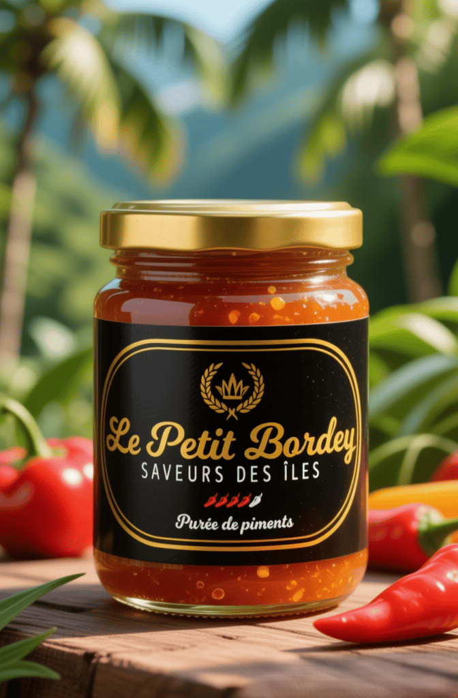

Le Petit Bordey
Le goût de la tradition artisanale.

Notre histoire
Chez le Petit Bordey, chaque sauce commence par une histoire. Celle d’une famille qui a grandi entre parfums de piment frais, herbes ciselées à la main et conversations autour d’une table toujours trop petite pour contenir tout le monde. Ici, la cuisine n’est pas seulement une affaire de goût — c’est une façon de transmettre, de rassembler, d’aimer. Notre savoir-faire vient de là : de gestes appris en regardant les anciens, de recettes murmurées plutôt qu’écrites, de cette attention portée aux détails que seule la main humaine sait encore donner. Chaque produit qui sort de notre atelier est préparée comme on prépare un repas pour les siens : avec patience, exigence, et une part de cœur. Nos créations sont le reflet d’une culture vivante, généreuse, qui ose le feu autant que la douceur. Nous choisissons nos ingrédients comme on choisit nos mots : avec soin, simplicité, et l’envie de partager le meilleur. Au Petit Bordey, nous croyons que le goût peut être un lien. Un pont entre nos racines et vos assiettes. Un moyen de faire voyager une tradition sans la dénaturer, et de célébrer ce qui nous unit : la joie de manger ensemble. Bienvenue chez nous Bienvenue au Petit Bordey, là où chaque sauce a une âme et chaque pot, un peu de notre famille.Dans notre atelier, chaque lot est préparé à la main selon des méthodes traditionnelles — c’est ce qui donne à nos produits leur authenticité et leur caractère unique.

Nos produits
Sélection premium — recettes familiales et ingrédients d’exception.
Boutique
Filtrez, ajoutez au panier et commandez en quelques clics. Paiement sécurisé et livraison soignée.
Nos valeurs
- 🌿Fabrication artisanale
- 👨👩👧👦Entreprise familiale
- 🌶️Produits authentiques
- 🇬🇵Héritage créole
Avis clients
« Un boudin hors pair — textures et épices parfaitement équilibrées. »— Marie, Martinique
« Les sauces sont incroyables, on retrouve les saveurs de la maison. »— Luc, Guadeloupe
Contact
Pour commandes, partenariats ou questions.
- Téléphone: +590 6 00 00 00 00
- Email: contact@lepetitbordey.example
- Adresse: Saint-Claude, Guadeloupe — France d'outre-mer